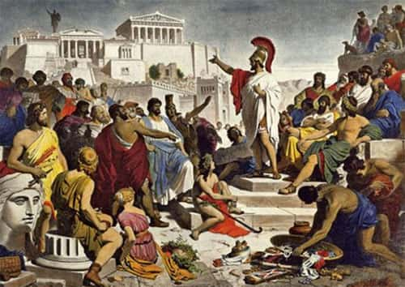

A civilização grega antiga não se constituiu como um império centralizado unificado, mas sim como um mosaico de cidades-estado autônomas chamadas de pólis. Geograficamente isoladas por montanhas, vales e pelo mar Egeu, cada pólis possuía suas próprias leis, governo, moeda e divindades protetoras, embora compartilhassem o mesmo idioma, mitos e sentimentos de helenidade.
Dentre as centenas de pólis, destacaram-se duas com modelos políticos e sociais totalmente opostos: Atenas, berço da democracia e da valorização do debate público, e Esparta, uma sociedade oligárquica, militarista e voltada quase inteiramente para a guerra e a preservação do domínio sobre as populações escravizadas (hilotas).
Em Atenas, especialmente após as reformas democráticas de Clístenes e Péricles, consolidou-se a democracia direta. Nela, os cidadãos reuniam-se na Eclésia (assembleia popular) para debater e votar diretamente as leis da cidade, sob o princípio da isonomia (igualdade perante a lei) e da isegoria (direito à palavra).
👥 Exclusão Social na Democracia: Apesar de inovadora, a cidadania ateniense era extremamente restrita. Mulheres, estrangeiros (metecos), escravos e menores de idade não eram considerados cidadãos e, portanto, não participavam das decisões políticas. Estima-se que apenas uma pequena parcela minoritária da população desfrutasse dos direitos democráticos.
A invenção da pólis e do espaço público propiciou o surgimento da filosofia. Ao substituir as explicações puramente míticas (mitos) por investigações racionais baseadas no argumento, na lógica e no debate público (logos), os pensadores gregos transformaram a forma de compreender o cosmos e a sociedade.
Nomes como Sócrates, Platão e Aristóteles questionaram a moral, a ética, a política e a natureza humana, consolidando um legado intelectual que continua a estruturar os fundamentos da cultura ocidental moderna.
Na Atenas clássica, a democracia direta permitia que os cidadãos exercessem o poder político de forma presencial na Assembleia (Eclésia). No entanto, essa prática de participação ativa coexistia com uma estrutura social excludente, na qual a base do trabalho produtivo era sustentada por indivíduos desprovidos de qualquer direito político ou civil.
Com base no texto e no contexto histórico da Grécia Antiga, pode-se afirmar que a cidadania ateniense:
Resolução: A democracia ateniense era restrita a uma parcela minoritária (homens maiores de idade, filhos de pais atenienses). Mulheres, estrangeiros e escravos eram rigorosamente excluídos da vida política.
“O surgimento da pólis grega representou uma verdadeira revolução mental. Na praça pública (ágora), os problemas da comunidade deixaram de ser resolvidos pela imposição divina ou pelo arbítrio de um rei, passando a ser debatidos por meio da palavra argumentada, da persuasão e do livre exame das ideias.”
O texto aponta que a estruturação da pólis esteve diretamente vinculada ao surgimento de:
Resolução: O debate na ágora e a necessidade de convencer os pares através da palavra propiciaram a emergência da política participativa e do pensamento filosófico racional (logos).